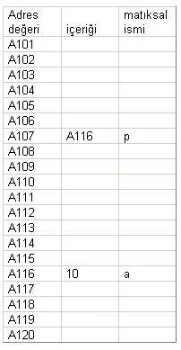

Pointerlar Ve Kullanımları
Pointer(gösterici) basitçe bir değişkenin bir hafıza alanını göstermesi demektir. C dilinde pointerlar :
Veritipi *pointeradi;
Şeklinde tanımlanır. Burada veritipi int, char, float gibi değişken tipleridir. Pointer adı ise bir değişken adının taşıması gereken özellikleri taşıyan ve tanımlandığı scope(geçerlilik alanında) yaşayacak olan değişken adıdır.
Bir değişkenin başına & işareti geldiğinde ise bu değişkenin adresini temsil eder. Yani değişken hafızada nereye konulduysa bu konulan yerin adresine bu işaret ile ulaşılabilir.
Örneğin,
int *p; int a = ; p = &a;
satırından sonra hafızada integer değer gösteren p isminde bir pointer tanımlanmış olur. Bunu hafızada temsili olarak gösterecek olursak :
Yukarıdaki temsili resimde, ilk sütun adres değerlerini temsil etmektedir, buna göre hafızanın a101 ie a120 numaralı adresleri arasındaki bilgiler gösterilmiştir (bu değerler hexadecimal olup temsili olarak yazılmıştır).
Kodda bulunan p ve a değerlerinin hafızada hangi bölüme atanacağı çalıştırma sırasında(execution time) belirlenir dolayısıyla tam olarak nerede bulunacağı bilinemez ancak p tanımlandıktan sonra a107 adresine ve a tanımlandıktan sonra a116 adresinin ayrıldığını kabul edelim. Bu durumda p'nin değeri a107 numaralı adreste yazacaktır.
Kodda a değerine 10 konulmuştur bu durumda a'nın değerinin durduğu a116 numaralı adreste sayısal olarak 10 yazacaktır.
Kodda a'nın taşıdığı adres değeri, p'nin içine atılmıştır. Bu durumda p'nin değeri a'nın adresi olacaktır.
Aşağıdaki örnek kodu çalıştırınız ve yorumlayınız:
#include int main() { int a = 10; int *p; p = &a; printf("%dn", *p); //p'nin gösterdiği yeri basar printf("%dn", p); //p'nin değerini yani, //p'nin gösterdiği yerin adresini basar. printf("%dn", a); //a'nın değerini basar. printf("%dn", &a); //a'nın adresini basar. printf("%dn", &p); //p'nin adresini basar. }
C dilinde her dizi bir pointer her pointer da doğal bir dizidir.
char str[]80, *p1;
p1 = str1;
Burada p1, str dizisinin -stringinin- ilk elemanının adresinin değerini alır. Yani string adı, aslında o stringin hafızadaki başlangıç adresini = stringin ilk karakterinin adresini tutmaktadır. str dizisinin 5. elemanına erişmek için ise:
str[4] veya *(p+1)
ifadelerini kullanırız. Her ikisinin de anlamı aynıdır.
C'de dizi elemanlarına 2 şekilde ulaşılır. pointer kullanımı ile indis kullanımı ile. indis kullanımı geliştirme ve anlama bakımından bir kolaylık sağlasa da, hız önemli bir konu olduğundan C programcıları genelde dizi erşimini pointer kullanarak yaparlar. Aşağıda aynı işi yapan iki fonksiyon yer almaktadır.
void putstr(char*s)
{
int t;
for(t=0;s[t];++t)putchar(s[t]);
}
void putstr(char*s)
{
while(*s)putchar(*s++);
}
C dilinde bir pointer'i araray gibi kullanmak için:
int *p = (int *)malloc(sizeof(int)*10);
Şeklinde bir satır yazmak yeterlidir. Burada klasik dizi tanımından farksız bir işlem yapılmış, hafızada 10'luk bir alan açılmış ve tipi integer olarak tanımlanmıştır.
Pointer'ın farkı bu alana erişim şeklindedir. Yani dizi tanımlarında olduğu gibi köşeli parantezle (a[3]gibi) erişmek yerine pointer üzerinde işlem yapmak gerekli ancak yöntem bir önceki örnekte olduğu gibi
printf("%dn", (p+4));
şeklinde işleyebilmektedir.
Kaynakça : Bilgisayar Kavramları